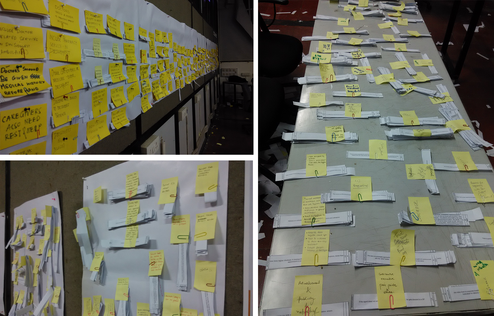

As a part of User studies course, interaction design class of 2014-16 along with 3 PhD students carried out a user research for docsuggest to come up design strategies. Total 87 interviews were conducted which comprised of 41 patients, 37 doctors, 6 receptionists, 1 clinic owner, 1 medical shop owner and 1 OT in charge in Mumbai, Hyderabad and Warangal.
The goal of the project was to create was to create strategic plan for docsuggest to understand the needs, requirements and dependencies of the patients and doctors it presently caters to. Also, provide design ideas to increase inflow of docsuggest users and decrease their apprehension.
As the data from 87 interviews was huge, affinity mapping was carried out to undertand affinity among the data. A bottom up approach was followed to come up with design ideas.
Interaction Design batch of 2014-16, IDC, IITB with 3 PhD students
Prof. Anirudha Joshi